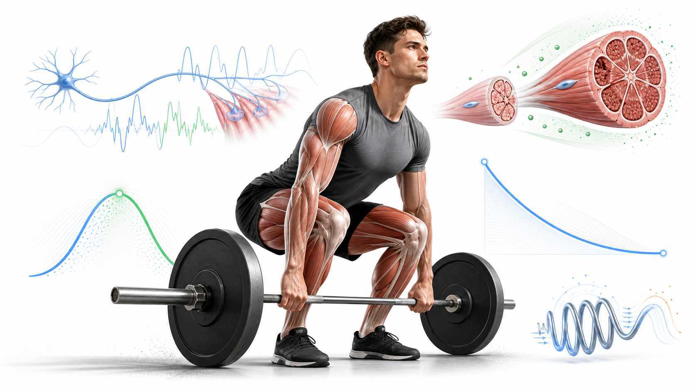
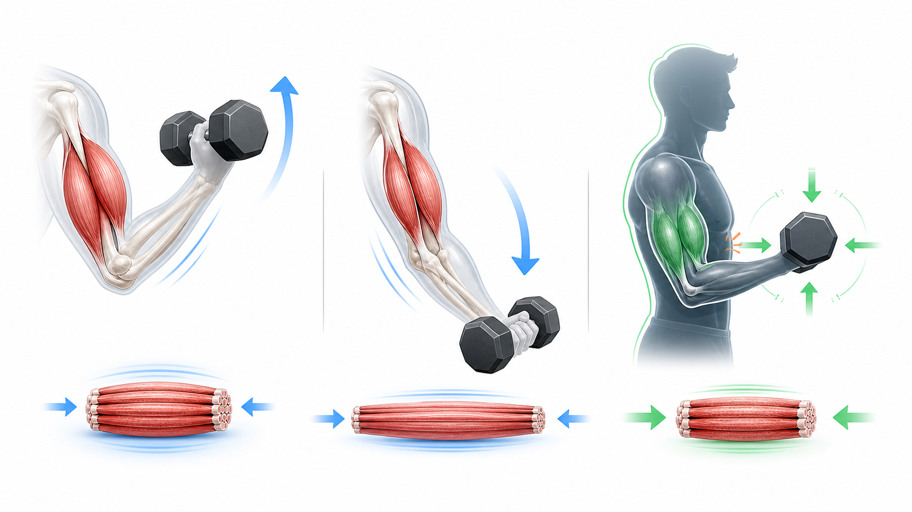
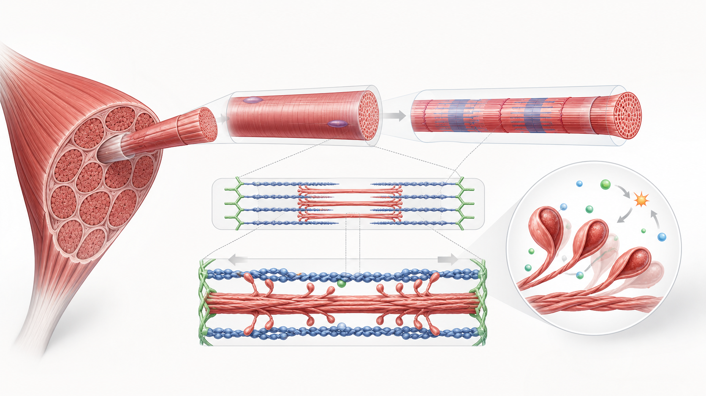

Day 20 · 运动损伤的力学机制

损伤先看力，再看负荷史。单次峰值超了，就是急性扭伤、拉伤或撞击伤；重复小伤累起来，就是过度使用。剪切、压缩、张力、扭转四种力，决定哪个组织先扛不住。
ACL 风险常见在减速、落地、变向时叠加膝内扣、足固定和旋转。动作筛查不是诊断，是找代偿、找风险线索，再回去调负荷、调技术、调恢复。
打开 Day20 原学习页 →
损伤先看力，再看负荷史。单次峰值超了，就是急性扭伤、拉伤或撞击伤；重复小伤累起来，就是过度使用。剪切、压缩、张力、扭转四种力，决定哪个组织先扛不住。
ACL 风险常见在减速、落地、变向时叠加膝内扣、足固定和旋转。动作筛查不是诊断，是找代偿、找风险线索，再回去调负荷、调技术、调恢复。
打开 Day20 原学习页 →



今日新知识 Day20：急性损伤和过度使用损伤，最核心区别是什么？
今日新知识 Day20：ACL 风险为什么常出现在减速和变向？
Day20：剪切力和压缩力怎么区分？
Day19：为什么新手前几周力量涨得快，但肌肉围度未必同步变大？
Day17：为什么闭合链动作通常更“功能性”？
Day13：离心收缩为什么常更容易酸和损伤？
Day06：等长收缩时，为什么肌肉仍在工作？
| 易错点 | 错因 | 修正句 |
|---|---|---|
| 把“疼”当成损伤唯一证据 | 忽略过度使用的累积过程。 | 损伤常先有负荷和恢复失衡，疼痛只是后面才出现的信号。 |
| 把膝前移等同危险 | 把一个姿势细节绝对化。 | 真正要看对线、速度、负荷、深度和个体控制。 |
| 只盯股四头肌，不看腘绳肌和臀肌 | 把 ACL 风险简化成单肌问题。 | 膝稳定是髋、膝、踝和核心一起管出来的。 |
| 把筛查当诊断 | 误解动作筛查作用。 | 筛查只找代偿线索，诊断还要看临床评估。 |